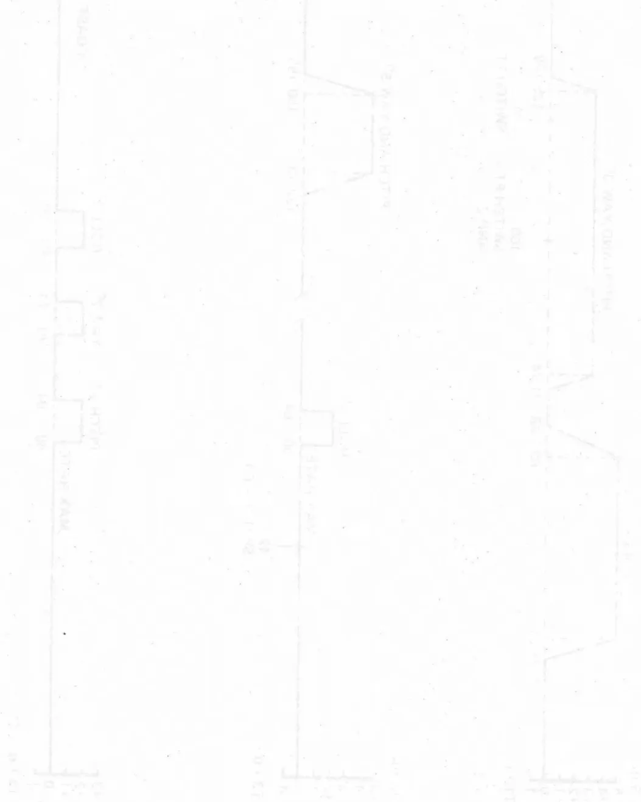
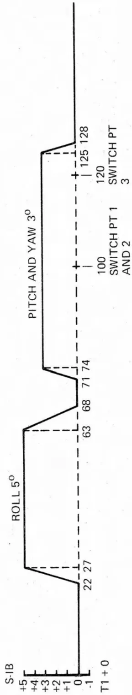
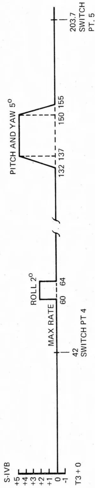
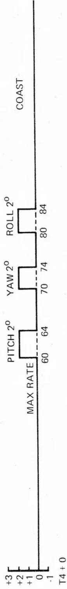

PART II
TABLE OF CONTENTS
| Paragraph | Title | Page |
|---|---|---|
| N/A | EDD CONFIGURATION CONTROL PAGE LISTING | ii |
| SECTION 1: | AS-206 DATA AND REQUIREMENTS | --- |
| 1.1 | INTRODUCTION | II-1-1 |
| 1.2 | LOGIC DIFFERENCES BETWEEN THE AS-206 MISSION AND THE BASELINE REQUIREMENTS | 3 |
| 1.3 | EVENT SEQUENCING TIMELINE | 5 |
| 1.4 | ORBITAL ATTITUDE TIMELINE | 23 |
| 1.5 | PRESETTINGS | 25 |
| 1.6 | FLIGHT SEQUENCING | 45 |
| 1.7 | DIGITAL COMMAND SYSTEM (DCS) MODE COMMAND SUMMARY | 63 |
| 1.8 | FLIGHT SIMULATION LADDER PROFILES | 65 |
PART II
SAT IB EDD CONFIGURATION CONTROL PAGE LISTING, REVISION A
This Revision A constitutes a complete reprinting of this volume; pages affected by this revision are identified by the notation "Rev. A" in the lower right corner. The following Flight Program Change Requests (FPCRs) are incorporated in this revision: FPCR 206-1 thru -9; 206-D1, -D2, and -D3.
The requirements for the AS-206 Flight Program consist of the baseline defined in Part I and this section of Part II. Wherever the AS-206 program functions must differ from the baseline, the requirements of this section supersede the baseline requirements of Part I.
The AS-206 Launch Vehicle is assigned to the Skylab A mission which comprises one dual and two single launch missions. The first payload is the unmanned Skylab, designated SL-1. It is boosted into orbit by the S-IC and S-II stages of the AS-513 launch vehicle. The second payload, assigned to the AS-206 launch vehicle, is a manned Command and Service Module (CSM) designated SL-2. At the conclusion of the first mission phase, the Skylab (SL-1) is stored in orbit for the use of later revisit missions. Each of the two revisit missions consists of a single Saturn IB launch with a manned CSM. The AS-207 and AS-208 launch vehicles are assigned to the revisit missions, designated SL-3 and SL-4 respectively. Each manned CSM docks with the Skylab in orbit.
The SL-1/Skylab A will be launched northeasterly from KSC Launch Complex 39 Pad A (LC-39A) and will be inserted in a circular orbit of approximately 235 NM altitude at an inclination of 50 degrees. Prior to launching the SL-2 CSM and each subsequent CSM, the Skylab will be checked from the ground by telemetry for compliance with pre-specified launch commit criteria.
On the first day following the SL-1 launch, the SL-2 manned CSM will be launched northeasterly on a Saturn IB vehicle from KSC Launch Complex 39, Pad B (LC-39B). The CSM will be inserted into an 81 x 120 NM orbit. The Service Module (SM), Service Propulsion System (SPS), and SM Reaction Control System (RCS) will be used to complete the CSM rendezvous maneuvers and to dock axially with the Skylab at port 5 of the Multiple Docking Adapter. The crew will then transfer from the CSM and activate the Skylab.
The SL-1/SL-2 mission will be planned for a duration of up to 28 days from the launch of the SL-2 CSM. After completion of the scheduled experiments the Skylab will be prepared for orbital storage and will be left in the solar inertial attitude. The CSM will undock from the Skylab and deorbit with the SPS. Assuming planned mission duration and deorbit, recovery will occur during daylight in the West Atlantic recovery area.
The subsequent SL-2 and SL-3 Manned CSM revisit missions will also be launched northeasterly from KSC LC-39B. Assuming planned mission duration and deorbit, both recoveries will occur during daylight in the mid-Pacific recovery area.
As presently defined, there are no logic differences from the baseline to the AS-206 logic requirements. As new logic, unique to AS-206, is defined, it will be added to this section.
(THIS PAGE HAS BEEN LEFT BLANK INTENTIONALLY.)
The following table describes the requirements for flight program sequencing. For each timed event, the table gives:
During boost mode, the events must occur at the times specified in the table with a minus zero, plus one boost major loop tolerance (unless a closer tolerance is defined). During orbital mode, the tolerance is minus zero, plus one second (unless a closer tolerance is defined). Events specified to occur at a time base plus zero () must be performed after the essential functions of starting the time base, but before any other functions except switch selector functions and minor loops.
Events that are defined with different presetting names must not be initiated by common logic, even though the times of occurrence may be the same. Common logic may be used for all events that are specified with the same presetting name.
The table contains a source code that is not a program requirement. It indicates the source and character of certain presettings and is included for convenience only. The meanings of the source codes are:
TABLE 1-1 EVENT SEQUENCE TIMELINE
| Time Reference | EDD Symbol | Presettings (Seconds) | Source Code | Events |
|---|---|---|---|---|
| T0 | None | 0 |
Initialize acceleration, (F/M), to FM0 Set backup acceleration (F/M)c, to the negative of the computed value of GSx. Set the accelerometer RTCs to 3 m/sec2 vertical (X), 2 m/sec2 crossrange (Y) and downrange (Z). Enable accelerometer zero test, using sin (2°) to compute Ac0. Initialize all values of reciprocal acceleration to (M/F)0 for use in S-IVB stage IGM. Reset all interrupts. Release Inhibit on INT9, TLC Interrupt. Set the number of permissible unreasonable backup resolver readings (MS15DT) to 12 per 0.8 sec. The guidance reference failure discretes (D04 and D06) will be set on detecting 13 unreasonable backup resolver readings in 0.8 sec. Set the zero gimbal test constant ML6HUN to 0.06 deg (all channels). Set MS25DT to 25*ΔTN1. |
TABLE 1-1 EVENT SEQUENCE TIMELINE (CONTINUED)
| Time Reference | EDD Symbol | Presettings (Seconds) | Source Code | Events |
|---|---|---|---|---|
| T0 | None | 0 |
Set MS04DT to . Start performing tests for guidance reference failure. If that condition is detected, set D04 and D06 and the appropriate mode code bits. These tests must be performed during all phases of flight. Set ladder rate limits (MSK5) to 0.48 deg per minor loop, all channels. Set ladder magnitude limits to 15.3 deg in pitch and yaw (MSK6) and roll (MSK16). Set attitude command () rate limits to 1.0 deg per sec. (MSLIM1=0.04 deg per minor loop in roll, MSLIM2=0.04 deg per minor loop in pitch and yaw.) Set the fine gimbal angle RTCs, (MLK2) and (MLK12) to 1.4 deg per minor loop in the pitch, yaw and roll channels for the initial reading only. After the initial reading, set the fine gimbal angle RTCs to 0.4 deg per minor loop in pitch and yaw (MLK2) and 0.4 deg per minor loop in roll (MLK12). |
TABLE 1-1 EVENT SEQUENCE TIMELINE (CONTINUED)
| Time Reference | EDD Symbol | Presettings (Seconds) | Source Code | Events |
|---|---|---|---|---|
| T0 | None | 0 |
Set the backup gimbal angle RTC (MLKRC1) to 18.5 deg for first use in all channels. Set the backup gimbal angle RTC after first use to 0.6 deg per minor loop in pitch and yaw (MLKRC3) and 0.6 deg per minor loop in roll (MLKRC5). |
|
| T0 | None | 16.0 (-0,+40 ms) | D1 |
* Start checking DI24 (Liftoff) for purpose of setting Time Base 1. This discrete must be checked before and after every minor loop (twice every 40 ms). |
| T0 | BU2 | 17.5 | D1 |
* Begin search for liftoff acceleration. |
| T0 | BU3 | 150.0 | D1 |
* Enter a one instruction non-interruptible loop, preventing TBI initiation, if liftoff has not been detected. |
| T0 | TM | 497.0 | D1 |
* Activate ECS Water Valve logic. The variable TM is incremented by 300 sec each time the logic is exercised. |
| T0 | NUPTIM | Variable | E |
Update position and velocity components via Navigation Update DCS command. This is a transmitted parameter and has meaning only if that command has been received and accepted. |
TABLE 1-1 EVENT SEQUENCE TIMELINE (CONTINUED)
| Time Reference | EDD Symbol | Presettings (Seconds) | Source Code | Events |
|---|---|---|---|---|
| T1 | None | 0 |
Initialize backup thrust, mass and mass flow rate to , , and , and start computing . Stop looking for Liftoff Discrete, DI24. Start using . Decrement T1 by T1BIAS if Time Base 1 was set by backup method. |
|
| T1 | 5.8 | D3 |
Start computing acceleration (F/M) based on measured velocities, using the first guess FM0 initialized at T0+0. Start checking DI14 and DI15 for S-IB engine out indications. If either discrete is detected, the will be used to compute , time tilt guidance will be modified, the backup time for Time Base 2 start will be modified, bit 18 of Mode Code 24 will be set, and either bit 8 (for DI15) or bit 9 (for DI14) of Mode Code 25 will be set. |
|
| T1 | 10.0 | D3 |
Set the accelerometer RTCs to downrange (Z), vertical (X), and cross-range (Y). |
TABLE 1-1 EVENT SEQUENCE TIMELINE (CONTINUED)
| Time Reference | EDD Symbol | Presettings (Seconds) | Source Code | Events |
|---|---|---|---|---|
| T1 | Tf1 | 5.8 | C3 | Change from first to second segment freeze time function for S-IB engine out. * |
| T1 | Tf2 | 40.0 | C3 | End of second segment of engine failure freeze time function. (This is the latest time that an engine failure will result in a chi freeze.) * |
| T1 | Tfar | 110.0 | C3 | Change from first segment to second segment of tilt arrest time bias function. Tilt arrest time will not be decreased for engine failures after this time. * |
| T1 | None | 132.0 | D1 | Enable INT2 (S-IB Low Level Sensors Dry "A") and start checking DI21 (S-IB Low Level Sensors Dry "B") for initiation of Time Base 2. This is keyed to the "Propellant Level Sensors Enable" switch selector command. If either signal is recognized after this time and down-range velocity is greater than 500 m/sec (bypass when GRF has occurred), Time Base 2 must be set. * |
| T1 | NTSTB2 | 135.5 | D1 | Nominal start time for Time Base 2 used in repeatable flight simulation. * |
TABLE 1-1 EVENT SEQUENCE TIMELINE (CONTINUED)
| Time Reference | EDD Symbol | Presettings (Seconds) | Source Code | Events |
|---|---|---|---|---|
| Tc | TMEFRZ | 0 | C3 | End Xy freeze following an S-IB engine out. YTMEFRZ is recalculated at the engine out time TEO. (T = T-Tilt + Td, where Tc is the implementation delay.) |
| Tc | TS0 | 10.3 | C3 | Backup time for starting pitch and roll guidance (Guidance will nominally be started at tower clearance.) |
| Tc | TT2 | 30.0 | C4 | Earliest time for chi freeze initiation if an S-IB engine failure occurs. |
| Tc | TS1 | 46.3 | C3 | Begin using second segment Time Tilt (Pitch program) coefficients. |
| Tc | TS2 | 89.05 | C3 | Begin using third segment Time Tilt (Pitch program) coefficients. |
| Tc | Tar | 131.05 | C3 | Nominal time to stop Time Tilt (Tilt Arrest). (This time can be extended by an S-IB engine out.) |
*
*
*
*
TABLE 1-1 EVENT SEQUENCE TIMELINE (CONTINUED)
| Time Reference | EDD Symbol | Presettings (Seconds) | Source Code | Events |
|---|---|---|---|---|
| T2 | None | 0 |
Stop checking DI21 and inhibit INT2 (S-IB Low Level Sense signals). If DI15 has not been previously detected, continue checking for it until detected. Do not modify accelerometer Zero test if DI15 is detected during Time Base 2. |
|
| T2 | None | 3.1 | D1 |
Continue checking for DI14. Do not modify accelerometer backups if DI14 is detected during Time Base 2. |
| T2 | None | 4.6 | D1 |
Set acceleration, F/M, to the preset constant FM2. (This is keyed to the inboard engines cutoff switch selector.) Adjust the S-IB accelerometer backup parameters (, ) to one-half their present values. |
| T2 | None | 6.0 | D1 |
Start checking for S-IB outboard engines cutoff signals (INT5 and DI23), initiated at propellant depletion cutoff, for the purpose of setting Time Base 3. (This is keyed to the LOX Depletion Cutoff Enable switch selector.) |
| T2 | NTSTB3 | 6.0 | D1 |
Nominal start time for Time Base 3 used in repeatable flight simulation. |
* *
* * *
*
*
* * *
TABLE 1-1 EVENT SEQUENCE TIMELINE (CONTINUED)
| Time Reference | EDD Symbol | Presettings (Seconds) | Source Code | Events |
|---|---|---|---|---|
| T3 | None | 0 |
Reinitialize first guess at acceleration, (F/M), to FM4. Increase vertical and downrange accelerometer RTCs to 50 m/sec2; crossrange RTC unchanged at 6 m/sec2. Disable accelerometer zero test. Reinitialize backup mass, mass flow rate and thrust to M2, zero and F21, respectively. End Time Tilt guidance if tilt arrest has not already occurred. Stop checking DI14 and DI15 for S-IB engine failures. If either discrete was detected earlier, the checking of the recognized discrete stopped at that time. Resume using sin (2°) to compute Ac0 and reset bit 18 of Mode Code 24, if set. Stop checking DI23 and inhibit INT5 (S-IB Cutoff signals). Start checking DI22 and release inhibit on INT6 for Manual initiation of S-IVB cutoff. This time must not be less than the time of issuance of the S-IVB Engine Cutoff No. 1 Off switch selector. |
* * * * *
TABLE 1-1 EVENT SEQUENCE TIMELINE (CONTINUED)
| Time Reference | EDD Symbol | Presettings (Seconds) | Source Code | Events |
|---|---|---|---|---|
| T3 | T3FMC | 6.08 | C3 | Start using mass flow rate, , and backup thrust, , in computing backup acceleration, (F/M). (This is the predicted time of S-IVB 90% thrust.) |
| T3 | None | 6.08 | C3 | If neither INT6 nor DI22 has been recognized in this time base, enable the accelerometer zero test and decrease vertical and downrange accelerometer RTCs to 6 m/sec2. |
| T3 | T3FM | 6.08 | C3 | Resume computing acceleration, (F/M), using first guess, FM4, initialized at T3+0. |
| Start computing smoothed reciprocal acceleration, (M/F)S, using first guess, (M/F)0, initialized at T0+0. | ||||
| T3 | S4IGTM | 10.0 | D1 | Release inhibit on Time Base 4 and start checking for cutoff conditions. Flight Program response to INT4 is inhibited before this time. Start checking DI5. (After this time, the presence of any two of the four S-IVB cutoff indications will initiate Time Base 4.) |
| T3 | T3IGM | 30.0 | C3 | Start IGM. |
| Start using . |
*
TABLE 1-1 EVENT SEQUENCE TIMELINE (CONTINUED)
| Time Reference | EDD Symbol | Presettings (Seconds) | Source Code | Events |
|---|---|---|---|---|
| T3 | TSMC | 58.5 | C3 | Enable SMC calculations. |
| T1i | None | 0.0 | C3 | Start computing artificial and decrementing T3i. Set T1i = 0. Stop computing and T1i. Start using mass flow rate, , and backup thrust, F3, in computation of backup acceleration, . |
| IGM Time-to-go | 25.0 | D2 | Start X, terminal steering guidance mode. Start using . |
|
| IGM Time-to-go | BN1 | 14.4 | B | Start building velocity history for S-IVB cutoff. |
| IGM Time-to-go | THSL + | 5.0 + | D2 | Enter IGM high speed cutoff loop when the velocity-to-be-gained is less than a velocity guard, VGRD. (If guidance reference failure has occurred, do not enter the high speed cutoff loop. If GRF occurs after entering, continue until cutoff.) Inhibit SMC calculations. |
*
TABLE 1-1 EVENT SEQUENCE TIMELINE (CONTINUED)
| Time Reference | EDD Symbol | Presettings (Seconds) | Source Code | Events |
|---|---|---|---|---|
| IGM Time-to- go |
D2 | Set up S-IVB Engine Cutoff On switch selector. |
TABLE 1-1 EVENT SEQUENCE TIMELINE (CONTINUED)
| Time Reference | EDD Symbol | Presettings (Seconds) | Source Code | Events |
|---|---|---|---|---|
| T4 | None | 0 |
Set acceleration, (F/M), to zero. Increase vertical and downrange accelerometer RTCs to 50 m/sec2 (crossover RTC unchanged at 6 m/sec2). Disable accelerometer zero test. Set backup thrust and mass flow rate to zero. Reset the command decoder and the DCS error counter and enable INT8. Enable the following DCS commands; Time Base Update, Generalized Switch Selector, Execute Generalized Maneuver, Return to Nominal Timeline, Terminate, Inhibit Water Control Valve Logic. Stop checking for S-IVB cutoff. (Disable INT4 and DI5.) Stop checking DI22 and inhibit INT6 for Manual Initiation of S-IVB cutoff. Start using . Change the zero gimbal test constant, ML6HUN, to 1.4 deg. |
TABLE 1-1 EVENT SEQUENCE TIMELINE (CONTINUED)
| Time Reference | EDD Symbol | Presettings (Seconds) | Source Code | Events |
|---|---|---|---|---|
| T4 | None | 0 |
Change attitude command rate limits in all channels. MSLIM1 = 0.024 deg per minor loop in roll (0.6 deg per sec). MSLIM2 = 0.016 deg per minor loop in pitch and yaw (0.4 deg per sec). Change from IGM guidance to orbital guidance. Set SMC corrections to zero. Set guidance commands and minor loop guidance commands to the gimbal angles on the first pass only. Start a X freeze. Maintain constant X commands. |
|
| T4 | None | 5.0 | D1 |
Start checking DI9, S/C control of Saturn. (The start of this test is keyed to the switch selector command S/C Control of Saturn Enable. If guidance reference failure occurs, DI9 checks will be enabled at the time of failure, independent of programmed time guards. |
| T4 | BN5 | 15.0 | D3 |
Enter orbit initialize and begin orbit navigation. Enable the following DCS commands: Memory Dump and Navigation Update. |
*
TABLE 1-1 EVENT SEQUENCE TIMELINE (CONTINUED)
| Time Reference | EDD Symbol | Presettings (Seconds) | Source Code | Events |
|---|---|---|---|---|
| T4 | BN5 | 15.0 | D3 |
Change the minor loop rate from 25 per sec to 10 per sec. Continue using MSLIM1 = 0.6 deg per sec and MSLIM2 = 0.4 deg per sec. Start telemetry acquisition and loss calculations. Set the number of permissible unreasonable backup resolver readings (MS15DT) to 6 per sec. The guidance reference failure discretes (D04 and D06) will be set on detecting 7 unreasonable backup resolver readings in 1 sec. Set the gimbal angle RTC for first pass on the backup gimbal (MLKRC1) to 18.5 deg. Change the backup gimbal angle RTC after first use to 1.1 deg per minor loop in pitch and yaw (MLKRC3) and 1.1 deg per minor loop in roll (MLKRC5). Start using . Change the fine gimbal angle RTC to 0.2 deg per minor loop in pitch and yaw (MLK2) and 0.2 deg per minor loop in roll (MLK12). |
*
TABLE 1-1 EVENT SEQUENCE TIMELINE (CONTINUED)
| Time Reference | EDD Symbol | Presettings (Seconds) | Source Code | Events |
|---|---|---|---|---|
| T4 | BN5 | 15.0 | D3 |
Change ladder rate limit (MSK5) to 0.24 deg per minor loop, all channels, unless guidance reference failure has occurred. In that case, leave MSK5 unchanged at zero. Set MS04DT to . Set MS25DT to . Continue using the zero gimbal test constant, ML6HUN, of 1.40 deg (all channels). |
| T4 | TRNTL | Variable | E |
Implement the DCS return to nominal timeline. This is a transmitted parameter and has meaning only if that command has been received and accepted. |
| T4 | TSOM | Variable | E |
Start a DCS generalized orbital maneuver or DCS specialized maneuver. This is a transmitted parameter and has meaning only if the corresponding command has been received and accepted. |
| T4+TBB-TB | TSEQ | Variable | E |
Start a DCS generalized alternate sequence. This is a transmitted parameter and has meaning only if that command has been received and accepted. |
* *
*
*
* * * *
(THIS PAGE HAS BEEN LEFT BLANK INTENTIONALLY.)
The following table (Table 1-2) describes the nominal attitude maneuver timeline from S-IVB cutoff until EOM. The following items are defined in the timeline for each maneuver:
TABLE 1-2 ORBITAL ATTITUDE TIMELINE
| Maneuver Number | Nominal Maneuver Time Seconds |
Description of Maneuver | Maneuver Type |
|---|---|---|---|
| 1 | T4+0.0 | Maintain vehicle attitude | X freeze |
| 2 | T4+20.0 | Track local horizontal - posigrade, Position I down | Track local reference |
| * | |||
| * | |||
| * | |||
| * |
Table 1-3 establishes the presettings to be used in the flight program. Program sequencing presettings are excluded since they are established in Section 1.3. For each presetting, the table gives:
Notice that the units of mass, force and angle presettings are not the same as those specified to be used in the flight program in Section 15 of Part I. The units used in the following table are consistent with those in other Apollo documentation while those in the flight program are dictated by programming constraints. For flight program implementation, all values given in degrees must be converted to pirads by dividing by 180. The forces, given in newtons, and masses, given in kilograms, must be converted to kilograms and , respectively, by dividing each quantity by .
The source codes are inserted for information only and are not flight program requirements. The codes denote:
PAD 39B
| EDD Symbol | Presetting | Units | Source Code | Definition |
|---|---|---|---|---|
| 0.87910194 | A2 | Cosine of geocentric latitude of launch pad | ||
| 6373401.0 | m | A2 | Geocentric radius to the center of the IU on the launch pad, used to calculate initial conditions | |
| 0.0028191516 | A2 | Sine of geodetic latitude minus geocentric latitude of the launch pad | ||
| 0.87775474 | A2 | Cosine of the geodetic latitude of the launch pad | ||
| 0.47911023 | A2 | Sine of the geodetic latitude of the launch pad | ||
| 6373376.0 | m | A2 | Initial radius component along -axis |
Note:
TABLE 1-3 PRESETTINGS (CONTINUED)
PREFLIGHT PTL SPECIAL DATA
| EDD Symbol | Presetting | Units | Source Code | Definition |
|---|---|---|---|---|
| A00 | 490.931 | deg | D3 | Coefficients of the variable azimuth polynomial, included in flight routines for use by preflight routines |
| A01 | -20.131 | D3 | ||
| A10 | -1.2501 | D3 | ||
| A11 | .0975 | deg-1 | D3 |
*
TABLE 1-3 PRESETTINGS (CONTINUED)
BOOST INITIALIZATION
| EDD Symbol | Presetting | Units | Source Code | Definition |
|---|---|---|---|---|
| 90.0 | deg | A1 | Position I Azimuth | |
| 9.7972155 | m/sec2 | A1 | Huntsville gravity used for flight simulation | |
| 34.7166666 | deg | A1 | Huntsville geodetic latitude used for flight simulation | |
| 9.7923069 | m/sec2 | A1 | Cape Kennedy gravity used for flight simulation | |
| 0.0 | m/sec | A1 | Initial velocity component along axis | |
| T1BIAS | 4.9 | sec | B | Time Base 1 bias used if liftoff is detected by the backup scheme |
*
*
*
*
TABLE 1-3 PRESETTINGS (CONTINUED)
BOOST INITIALIZATION
| EDD Symbol |
Presetting | Units | Source Code |
Definition |
|---|---|---|---|---|
| TGRR0 | TBD | sec | D3 | Nominal value of TGRR |
| TLCK | TBD | D3 | Target load checksum factor |
TABLE 1-3 PRESETTINGS (CONTINUED)
ACCELEROMETER PROCESSING
| EDD Symbol | Presetting | Units | Source Code | Definition | |
|---|---|---|---|---|---|
| F1 | 7933924.0 | n | C4 | Predicted average S-IB thrust used to compute | * |
| F2I | 526359.0 | n | C4 | Predicted average S-IVB buildup thrust used to compute | * |
| F2 | 994431.0 | n | C4 | Predicted average S-IVB thrust used to compute before EMRC | * |
| F3 | 847773.0 | n | C4 | Predicted average S-IVB thrust used to compute after EMRC | * |
| 2878.24 | kg/sec | C4 | S-IB backup mass flow rate used to compute | * | |
| 239.707 | kg/sec | C4 | S-IVB backup mass flow rate prior to EMRC used to compute | * | |
| 202.742 | kg/sec | C4 | S-IVB backup mass flow rate after EMRC used to compute | * | |
| M1 | 589697.6 | kg | C4 | Mass of the vehicle at liftoff used to compute | * |
| M2 | 134210.9 | kg | C4 | Mass of the vehicle (not including LES) at T3+T3FMC used to compute | * |
TABLE 1-3 PRESETTINGS (CONTINUED)
ACCELEROMETER PROCESSING
| EDD Symbol |
Presetting | Units | Source Code |
Definition |
|---|---|---|---|---|
| sin (2°) | .0348994967 | A1 | Sin (2°) used to compute the estimated thrust (F/M) misalignment uncertainty term | |
| sin (6°) | .1045284633 | A1 | Sin (6°) used to compute the estimated thrust (F/M) misalignment uncertainty term if an S-IB engine out occurs |
TABLE 1-3 PRESETTINGS (CONTINUED)
BOOST NAVIGATION
| EDD Symbol | Presetting | Units | Source Code | Definition |
|---|---|---|---|---|
| MFK1 | 0.0120948 | D2 | (M/F)S filter coefficients for S-IVB stage | |
| MFK2 | 0.0213339 | |||
| MFK3 | -0.0261577 | |||
| MFK4 | -0.00526684 | |||
| MFK5 | 2.80483 | |||
| MFK6 | -2.85880 | |||
| MFK7 | 1.24933 | |||
| MFK8 | -0.197360 | |||
| FM0 | 12.7 | m/sec2 | B | Initial (F/M) for S-IB burn (This pre-setting is valid at T1+TS1EO and is also used to initialize the S-IB engine out acceleration decrease table.) |
| FM2 | 21.0 | m/sec2 | B | Constant (F/M) during Time Base 2 |
| FM4 | 7.4 | m/sec2 | B | Initial (F/M) for S-IVB burn |
| (M/F)0 | .135 | sec2/m | B | M/F at T3+T3FM used to initialize the S-IVB smoothing filter at T0+0 |
| μ | 3.986032E+14 | m3/sec2 | A1 | Product of universal gravity constant and mass of the earth |
TABLE 1-3 PRESETTINGS (CONTINUED)
FIRST STAGE GUIDANCE
| EDD Symbol | Presetting | Units | Source Code | Definition |
|---|---|---|---|---|
| B11 | 0.0 | C4 | Coefficient used to calculate delta freeze time () for S-IB engine out during first S-IB engine failure interval | |
| B12 | 15.0 | sec | C4 | Coefficient used to calculate delta freeze time () for S-IB engine out during first S-IB engine failure interval |
| B21 | -.375 | C4 | Coefficient used to calculate delta freeze time () for S-IB engine out during second S-IB engine failure interval | |
| B22 | 15.0 | sec | C4 | Coefficient used to calculate delta freeze time () for S-IB engine out during second S-IB engine failure interval |
| Carl | 20.0 | sec | C4 | Constant time bias used to modify in case of an S-IB engine failure prior to . |
*
*
*
*
*
*
*
*
*
*
TABLE 1-1 PRESETTINGS
TABULAR COMMANDED INERTIAL YAW ATTITUDE FOR
SL-1 OPEN LOOP GUIDANCE (TIME TILT YAW COMMANDS)
| Time from Time Base 1 (Symbols) |
Presetting (sec) |
Inertial Yaw Command (Symbols) |
Presetting (Deg) |
|---|---|---|---|
| TYAW01 | 12.0 | YAWC01 | 1.57500 |
| TYAW02 | 46.0 | YAWC02 | 1.57500 |
| TYAW03 | 47.0 | YAWC03 | 1.54803 |
| TYAW04 | 49.0 | YAWC04 | 1.41042 |
| TYAW05 | 51.0 | YAWC05 | 1.24992 |
| TYAW06 | 55.0 | YAWC06 | 0.83790 |
| TYAW07 | 57.0 | YAWC07 | 0.60702 |
| TYAW08 | 61.0 | YAWC08 | 0.08980 |
| TYAW09 | 66.0 | YAWC09 | -0.67683 |
| TYOW10 | 71.0 | YAWC10 | -1.52578 |
| TYAW11 | 73.0 | YAWC11 | -1.81980 |
| TYAW12 | 74.0 | YAWC12 | -1.95363 |
| TYAW13 | 76.0 | YAWC13 | -2.07927 |
| TYAW14 | 77.0 | YAWC14 | -2.08010 |
| TYAW15 | 79.0 | YAWC15 | -1.99646 |
| TYAW16 | 81.0 | YAWC16 | -1.77512 |
| TYAW17 | 84.0 | YAWC17 | -1.34329 |
| TYAW18 | 87.0 | YAWC18 | -0.81358 |
| TYAW19 | 89.0 | YAWC19 | -0.46485 |
| TYAW20 | 91.0 | YAWC20 | -0.22682 |
| TYAW21 | 93.0 | YAWC21 | -0.10701 |
| TYAW22 | 96.0 | YAWC22 | -0.04371 |
| TYAW23 | 102.0 | YAWC23 | -0.20853 |
| TYAW24 | 106.0 | YAWC24 | -0.18736 |
| TYAW25 | 111.0 | YAWC25 | -0.14727 |
Note: The data in this table reflects the SL-1 Yaw Profile and is included for checkout purposes only. SL-2 data will be provided as soon as it becomes available.
(THIS PAGE HAS BEEN LEFT BLANK INTENTIONALLY)
TABLE 1-3 PRESETTINGS (CONTINUED)
FIRST STAGE GUIDANCE
| EDD Symbol | Presetting | Units | Source Code | Definition |
|---|---|---|---|---|
| F10 | 0.230773E+1 | deg | ||
| F11 | -0.186784E+0 | deg/sec | ||
| F12 | -0.524748E-2 | deg/sec2 | C3 | Coefficients of first segment time tilt polynomial |
| F13 | 0.140517E-4 | deg/sec3 | ||
| F20 | 0.117424E+2 | deg | ||
| F21 | -0.740514E+0 | deg/sec | ||
| F22 | 0.451333E-2 | deg/sec2 | C3 | Coefficients of second segment time tilt polynomial |
| F23 | -0.338949E-4 | deg/sec3 | ||
| F30 | 0.985854E+1 | deg | ||
| F31 | -0.658243E+0 | deg/sec | ||
| F32 | 0.851123E-3 | deg/sec2 | C3 | Coefficients of third segment time tilt polynomial |
| F33 | -0.733002E-6 | deg/sec3 | ||
| Td | 1.2375 | sec | B | Time tilt bias constant |
| GANTRY | 138.0 | m | A1 | Height of gantry (LUT) |
* * * * *
TABLE 1-5 PRESETTINGS (CONTINUED)
NOMINAL COMPUTATION CYCLE LENGTHS
| EDD Symbol | Presetting | Units | Source Code | Definition |
|---|---|---|---|---|
| .77 | sec | B | Nominal comp cycle length from T0+0 to T1+0 | |
| .75 | sec | B | Nominal comp cycle length from T1+0 to T3+T3IGM | |
| 1.6 | sec | B | Nominal comp cycle length from T3+T3IGM to S-IVB steering | |
| 1.3 | sec | B | Nominal comp cycle length from start of S-IVB guidance until T4-THSL | |
| .98 | sec | B | Nominal comp cycle length from T4+0 to T4+BN5 | |
| 1.0 | sec | B | Nominal comp cycle length from T4 + BN5 to EOM |
TABLE 1-3 PRESETTINGS (CONTINUED)
BOOST IGM
| EDD Symbol | Presetting | Units | Source Code | Definition |
|---|---|---|---|---|
| 4154.6328 | m/sec | C3 | Exhaust velocity used in first phase for IGM computations | |
| 298.5 | sec | C3 | Nominal IGM time-to-go from to S-IVB EMRC | |
| 298.5 | sec | C3 | Nominal first phase burn time | |
| 538.5 | sec | C3 | Nominal value of used in artificial calculations | |
| 128534.32 | kg | Estimated mass of S-IVB at IGM initiation | ||
| 4181.4755 | m/sec | C3 | Exhaust velocity used in second phase IGM computations | |
| 281.14 | sec | C3 | Initial for second phase IGM | |
| 129.6 | sec | C3 | Nominal IGM time-to-go from S-IVB EMRC to |
* * * * *
TABLE 1-3 PRESETTINGS (CONTINUED)
BOOST IGM
| EDD Symbol | Presetting | Units | Source Code | Definition |
|---|---|---|---|---|
| ROV | 1.80 | C3 | Bias constant for terminal range angle | |
| -9.35 | m/sec2 | C3 | Terminal gravity for S-IVB burn | |
| -9.35 | m/sec2 | C3 | Terminal X gravity component for S-IVB burn | |
| 0.0 | m/sec2 | C3 | Terminal Y gravity component for S-IVB burn | |
| 0.0 | m/sec2 | C3 | Terminal Z gravity component for S-IVB burn | |
| SQ1 | 5494.275 | m/sec | B | First guess at for S-IVB burn |
| SQ2 | 1.0 | B | First guess at | |
| 7.2381 | m/sec | C3 | Thrust decay velocity bias for S-IVB burn | |
| YAWLIM | 45.0 | deg | B | Yaw guidance command limit |
| SMCG | 0.03 | rad/sec | D2 | SMC gain for Time Base 3 |
| 150.0 | m/sec | C3 | Velocity guard for the high speed loop in S-IVB burn |
*
*
*
TABLE 1-3 PRESETTINGS (CONTINUED)
TYPICAL TARGETING LOAD DATA FOR USE BY FLIGHT SIMULATION
| EDD Symbol | Presetting | Units | Source Code | Definition |
|---|---|---|---|---|
| 7835.13 | m/sec | C3 | Desired insertion velocity for S-IVB burn | |
| 6528178.0 | m | C3 | Desired insertion radius for S-IVB burn | |
| 0.0 | deg | C3 | Desired insertion flight path angle | |
| 50.0 | deg | C3 | Inclination of parking orbit | |
| 154.675 | deg | C3 | Longitude of descending node | |
| 0.0 | deg/sec | C3 | Time rate of change of the descending node | |
| 45.79968 | deg | C3 | Platform Azimuth |
* * * * *
TABLE 1-3 PRESETTINGS (CONTINUED)
ORBITAL GUIDANCE
| EDD Symbol | Presetting | Units | Source Code | Definition |
|---|---|---|---|---|
| SPM1 | 0.0 | C2 | Pitch Yaw Roll |
|
| CPM1 | 0.0 | Attitude variables for Maneuver 1 |
||
| SYM1 | 0.0 | |||
| CYM1 | 0.0 | |||
| RAM1 | 0.0 | deg | ||
| TYPM1 (NOTE*) |
0.0 | B | Type of maneuver indicator for Maneuver 1 | |
| SPM2 | 0.0 | C2 | Pitch Yaw Roll |
|
| CPM2 | 1.0 | Attitude variables for Maneuver 2 |
||
| SYM2 | 0.0 | |||
| CYM2 | 1.0 | |||
| RAM2 | 0.0 | deg | ||
| TYPM2 | -1.0 | B | Type of maneuver indicator for Maneuver 2 |
*NOTE: TYPM1 -TYPM2 indicate whether a maneuver is an inertial reference (+1), chi freeze (0), a local reference (-1), or an inertial hold of local reference (-2).
TABLE 1-3 PRESETTINGS (CONTINUED)
GRAVITY
| EDD Symbol |
Presetting | Units | Source Code |
Definition |
|---|---|---|---|---|
| ae | 6378165.0 | m | A1 | Earth's semi-major axis |
| b | 6356783.0 | m | A1 | Earth's semi-minor axis |
| D | 0.7875E-5 | C3 | Fourth zonal harmonic coefficient used in the gravitational potential model | |
| H | 0.575E-5 | C3 | Third zonal harmonic coefficient used in the gravitational potential model | |
| J | 1.62345E-3 | C3 | Second zonal harmonic coefficient used in the gravitational potential model |
TABLE 1-3 PRESETTINGS (CONTINUED)
TELEMETRY ACQUISITION AND LOSS
| EDD Symbol |
Presetting | Units | Source Code |
Definition |
|---|---|---|---|---|
| RSTA | 6374932.0 | m | D3 | Mean radius of the telemetry stations |
| .000023211523 | pirads/ sec |
A1 | Earth's rotational rate |
TABLE 1-3 PRESETTINGS (CONTINUED)
DRAG
| EDD Symbol |
Presetting | Units | Source Code |
Definition |
|---|---|---|---|---|
| 0.179142E-6 | kg/m3 | C3 | Atmospheric density polynomial coefficients | |
| -0.37213949E-11 | kg/m4 | |||
| 0.31057886E-16 | kg/m5 | |||
| -0.12962178E-21 | kg/m6 | |||
| 0.26986419E-27 | kg/m7 | |||
| -0.22388267E-33 | kg/m8 | |||
| 0.164311287E-2 | m2/kg | C3 | Orbital drag model constant | |
| 11.079923 | C3 | Drag as a function of the cosine of the angle of attack polynomial coefficients | ||
| 0.17954281 | ||||
| -2.1771971 | ||||
| -0.28074902 | ||||
| -5.8764139 |
TABLE 1-5 PRESETTINGS (CONTINUED)
DRAG
| EDD Symbol | Presetting | Units | Source Code | Definition |
|---|---|---|---|---|
| 1.5E5 | m | C3 | Lower bound of atmospheric density polynomial | |
| 3.0E5 | m | C3 | Upper bound of atmospheric density polynomial | |
| 0.5E-7 | kg/m3 | C3 | Constant atmospheric density used when the altitude of the vehicle is less than |
The flight sequencing requirements for AS-206 are established in Table VII of the current revision of the Flight Sequence Program ICD 68M00001 and the approved IRN's described in Table 1-4. The information to be obtained from the ICD are switch selector command title, stage, address, and time from base. No other information contained in the ICD is to be considered a program requirement.
TABLE 1-4 SWITCH SELECTOR SEQUENCING
| ICD/IRN | COMMAND | SWITCH SELECTOR | TIME FROM BASE SECONDS |
||
|---|---|---|---|---|---|
| CODE | STAGE | CHN | |||
| LIFTOFF - START OF TIME BASE NO. 1 (T1) | T1 .0 | ||||
| 3 | SINGLE ENGINE CUTOFF ENABLE | 0101 1010 | S1B | 100 T1 | + 5.8 |
| 68M00001 | LOX TANK PRESSURIZATION SHUTOFF VALVES CLOSE ON | 0110 1010 | S1VB | 79 T1 | + 6.0 |
| 3 | MULTIPLE ENGINE CUTOFF ENABLE NO.1 | 0001 0001 | S1B | 16 T1 | + 10.0 |
| 3 | MULTIPLE ENGINE CUTOFF ENABLE NO.2 | 0110 1111 | S1B | 15 T1 | + 10.1 |
| 7 | SENSOR PANEL NO.1, COVER NO.2 EXPULSION | 0111 0100 | IU | 54 T1 | + 10.2 |
| 7 | SENSOR PANEL NO.1, COVER NO.2 EXPULSION RESET | 0110 1011 | IU | 59 T1 | + 10.4 |
| 68M00001 | TELEMETER CALIBRATION ON | 0101 1111 | S-1B | 2 T1 | + 20.0 |
| 68M00001 | TELEMETER CALIBRATION OFF | 0000 1111 | S-1B | 39 T1 | + 25.0 |
| 68M00001 | TELEMETRY CALIBRATOR IN-FLIGHT CALIBRATE ON | 0010 0010 | IU | 23 T1 | + 27.0 |
| 68M00001 | TELEMETRY CALIBRATOR IN-FLIGHT CALIBRATE OFF | 0001 0010 | IU | 24 T1 | + 32.0 |
| 68M00001 | LAUNCH VEHICLE ENGINES EDS CUTOFF ENABLE | 0011 0001 | IU | 38 T1 | + 40.0 |
| 68M00001 | TELEMETRY CALIBRATOR IN-FLIGHT CALIBRATE ON | 0010 0010 | IU | 23 T1 | + 50.2 |
| 68M00001 | TELEMETRY CALIBRATOR IN-FLIGHT CALIBRATE OFF | 0001 0010 | IU | 24 T1 | + 55.2 |
TABLE 1-4 SWITCH SELECTOR SEQUENCING (CONTINUED)
| ICD/IRN | COMMAND | SWITCH SELECTOR | TIME FROM BASE SECONDS |
||
|---|---|---|---|---|---|
| CODE | STAGE | CHN | |||
| 68M00001 | FLIGHT CONTROL COMPUTER SWITCH POINT NO. 1 | 0111 1110 | IU | 43 T1 | + 100.0 |
| 68M00001 | FLIGHT CONTROL COMPUTER SWITCH POINT NO. 2 | 0100 0001 | IU | 21 T1 | + 100.2 |
| 68M00001 | TELEMETER CALIBRATION ON | 0101 1111 | S-1B | 2 T1 | + 119.8 |
| 68M00001 | FLIGHT CONTROL COMPUTER SWITCH POINT NO. 3 | 0101 0001 | IU | 22 T1 | + 120.0 |
| 68M00001 | IU CONTROL ACCELEROMETER POWER OFF | 0111 0101 | IU | 106 T1 | + 120.2 |
| 68M00001 | TELEMETER CALIBRATION OFF | 0000 1111 | S-1B | 39 T1 | + 124.8 |
| 68M00001 | TM CALIBRATE ON | 0100 1010 | S1VB | 62 T1 | + 127.7 |
| 68M00001 | TM CALIBRATE OFF | 0000 0111 | S1VB | 63 T1 | + 128.7 |
| 68M00001 | EXCESS RATE (P,Y,R) AUTO-ABORT INHIBIT ENABLE | 0110 1111 | IU | 15 T1 | + 131.2 |
| 68M00001 | EXCESS RATE (P,Y,R) AUTO-ABORT INHIBIT AND SWITCH RATE GYROS SC INDICATION A |
0101 1111 | IU | 2 T1 | + 131.4 |
| 68M00001 | S-1B TWO ENGINES OUT AUTO-ABORT INHIBIT ENABLE | 0000 1110 | IU | 51 T1 | + 131.6 |
| 68M00001 | S-1B TWO ENGINES OUT AUTO-ABORT INHIBIT | 0001 1110 | IU | 35 T1 | + 131.8 |
| 68M00001 | PROPELLANT LEVEL SENSORS ENABLE | 0111 0111 | S-1B | 104 T1 | + 132.0 |
TABLE 1-4 SWITCH SELECTOR SEQUENCING (CONTINUED)
| ICC/IRN | COMMAND | SWITCH SELECTOR | TIME FROM BASE SECONDS |
||
|---|---|---|---|---|---|
| CODE | STAGE | CHN | |||
| S-1B. PREPELLANT LEVEL SENSOR ACTUATION-START OF TIME BASE NO. 2 (T2) |
S-1B | T2 .0 | |||
| 68M00001 | EXCESS RATE (ROLL) AUTO-ABORT INHIBIT ENABLE | 0100 1111 | IU | 34 | T2 + .2 |
| 68M00001 | EXCESS RATE (RCLL) AUTO-ABORT INHIBIT AND SWITCH RATE CYROS SC INDICATOR B |
0111 0001 | IU | 50 | T2 + .4 |
| 68M00001 | INEGARD ENGINES CUTOFF | 0100 0100 | S-1B | 98 | T2 + 3.1 |
| 68M00001 | AUTO-ABORT ENABLE RELAYS RESET | 0001 0001 | IU | 16 | T2 + 3.4 |
| 68M00001 | CHARGE VOLTAGE IGNITION EBM FIRING UNITS | 0111 0100 | SIVB | 54 | T2 + 3.6 |
| 68M00001 | Q-BALL POWER OFF | 0111 1111 | IU | 1 | T2 + 4.0 |
| 68M00001 | PREVALVES OPEN | 0110 1001 | SIVB | 83 | T2 + 4.3 |
| 68M00001 | LOX DEPLETION CUTOFF ENABLE | 0000 0110 | S-1B | 57 | T2 + 4.6 |
| 68M00001 | FUEL DEPLETION CUTOFF ENABLE | 0110 1010 | S-1B | 79 | T2 + 5.6 |
TABLE 1-4 SWITCH SELECTOR SEQUENCING (CONTINUED)
| ICD/IRN | COMMAND | SWITCH SELECTOR | TIME FROM BASE SECONDS |
||
|---|---|---|---|---|---|
| CODE | STAGE | CHN | |||
| S-1B OUTBOARD ENGINES CUTOFF - START OF TIME BASE NO. 3 (T3) |
T3 .0 | ||||
| 68M00001 | S-1B CUTBOARD ENGINES CUTOFF | C011 C011 | S-1B | 18 | T3 + .1 |
| 1 | LOX TANK PRESSURIZATION SHUTOFF VALVES OPEN | 0111 1010 | S1VB | 80 | T3 + .2 |
| 1 | LOX TANK FLIGHT PRESSURIZATION SYSTEM ON | 0111 1CC1 | S1VB | 103 | T3 + .3 |
| 1 | S-1VB ENGINE CUTOFF NO. 1 OFF | C111 C010 | S1VB | 13 | T3 + .4 |
| 1 | S-1VB ENGINE CUTOFF NO. 2 OFF | CC00 11C0 | S1VB | 49 | T3 + .5 |
| 7 | SENSOR PANEL NO.1, COVER NO.3 AND PANEL NO.2, COVERS NO.2 AND NO.4 EXPULSION |
0110 0100 | IU | 55 | T3 + C.6 |
| 7 | SENSOR PANEL NO.1, COVER NO.3 AND PANEL NO.2, COVERS NO.2 AND NO.4 EXPULSION RESET |
01C1 01C0 | IU | 56 | T3 + C.8 |
| 68M00C01 | ULLAGE ROCKETS IGNITION | 0101 0100 | S1VB | 56 | T3 + 1.1 |
| 6EM00C01 | S-1B/S-1VB SEPARATION ON | 0C10 0010 | S-1B | 23 | T3 + 1.3 |
| 6EM00CC01 | FLIGHT CONTROL COMPUTER S-1VB BURN MODE ON A | 0010 CC01 | IU | 53 | T3 + 1.5 |
TABLE 1-4 SWITCH SELECTOR SEQUENCING (CONTINUED)
| ICD/IRN | COMMAND | SWITCH SELECTOR | TIME FROM BASE SECONDS |
||
|---|---|---|---|---|---|
| CODE | STAGE | CHN | |||
| 68M00001 | FLIGHT CONTROL COMPUTER S-IVB BURN MODE ON B | 0010 1101 10 | 10 | 6 T3 | + 1.7 |
| 68M00001 | ENGINE READY BYPASS ON | 0110 0011 SIVB | SIVB | 10 T3 | + 1.9 |
| 68M00001 | LH2 CHILLDOWN PUMP OFF | 0110 1011 SIVB | SIVB | 59 T3 | + 2.1 |
| 68M00001 | LOX CHILLDOWN PUMP OFF | 0010 0010 SIVB | SIVB | 23 T3 | + 2.3 |
| 68M00001 | S-IVB ENGINE CUT INDICATION A ENABLE | 0001 0011 10 | 10 | 9 T3 | + 2.4 |
| 68M00001 | S-IVB ENGINE OUT INDICATION B ENABLE | 0011 1100 10 | 10 | 29 T3 | + 2.6 |
| 68M00001 | ENGINE IGNITION SEQUENCE START | 0001 0011 SIVB | SIVB | 9 T3 | + 2.7 |
| 68M00001 | ENGINE IGNITION SEQUENCE START RELAY RESET | 0101 1101 SIVB | SIVB | 27 T3 | + 3.2 |
| 68M00001 | FUEL INJECTION TEMPERATURE OK BYPASS | 0111 0011 SIVB | SIVB | 11 T3 | + 3.7 |
| 68M00001 | LH2 TANK PRESSURIZATION CONTROL SWITCH ENABLE | 0001 1001 SIVB | SIVB | 68 T3 | + 5.3 |
| 1 | P.U. MIXTURE RATIO 5.5 ON | 0100 1111 SIVB | SIVB | 34 T3 | + 8.7 |
| 68M00001 | CHARGE ULLAGE JETTISON EBW FIRING UNITS | 0110 0100 SIVB | SIVB | 55 T3 | + 10.2 |
| 68M00001 | ULLAGE ROCKETS JETTISON | 0001 1010 SIVB | SIVB | 57 T3 | + 13.3 |
| 68M00001 | FUEL INJECTION TEMPERATURE OK BYPASS RESET | 0001 0001 SIVB | SIVB | 16 T3 | + 13.7 |
| 68M00001 | ULLAGE EBW FIRING UNITS CHARGE RELAYS RESET | 0101 1100 SIVB | SIVB | 68 T3 | + 19.3 |
TABLE 1-4 SWITCH SELECTOR SEQUENCING (CONTINUED)
| ICC/IRN | COMMAND | SWITCH SELECTOR | TIME FROM BASE SECONDS |
||
|---|---|---|---|---|---|
| CODE | STAGE | CHN | |||
| 68M00001 | ULLAGE ROCKETS IGNITION AND JETTISON RELAYS RESET |
0010 1011 | SIVB | 73 T3 | + 19.5 |
| 68M00001 | HEAT EXCHANGER BYPASS VALVE ENABLE ON | 0111 0001 | SIVB | 50 T3 | + 24.0 |
| 68M00001 | TELEMETRY CALIBRATOR IN-FLIGHT CALIBRATE ON | 0010 0010 | IU | 23 T3 | + 25.4 |
| 68M00001 | TELEMETRY CALIBRATOR IN-FLIGHT CALIBRATE OFF | 0001 0010 | IU | 24 T3 | + 30.4 |
| 68M00001 | WATER COOLANT VALVE OPEN | 0110 0101 | IL | 107 T3 | + 38.4 |
| 68M00001 | FLIGHT CONTROL COMPUTER SWITCH POINT NO. 4 | 0110 0001 | IU | 4 T3 | + 42.0 |
| 68M00001 | FLIGHT CONTROL COMPUTER SWITCH POINT NO. 5 | 0011 0010 | IU | 44 T3 | + 203.7 |
| 68M00001 | TELEMETRY CALIBRATOR IN-FLIGHT CALIBRATE ON | 0010 0010 | IU | 23 T3 | + 205.4 |
| 68M00001 | TELEMETRY CALIBRATOR IN-FLIGHT CALIBRATE OFF | 0001 0010 | IU | 24 T3 | + 210.4 |
| 68M00001 | LH2 TANK PRESSURIZATION CONTROL SWITCH DISABLE | 0010 1001 | SIVB | 69 T3 | + 302.9 |
| 2 | P.U. MIXTURE RATIO 3.5 OFF | 0001 1110 | SIVB | 35 T3 | + 327.9 |
| 2 | P.U. MIXTURE RATIO 4.8 ON | 0100 0011 | SIVB | 32 T3 | + 328.1 |
| 68M00001 | TELEMETRY CALIBRATOR IN-FLIGHT CALIBRATE ON | 0010 0010 | IU | 23 T3 | + 355.4 |
| 68M00001 | TELEMETRY CALIBRATOR IN-FLIGHT CALIBRATE OFF | 0001 0010 | IU | 24 T3 | + 360.4 |
TABLE 1-4 SWITCH SELECTOR SEQUENCING (CONTINUED)
| ICC/IRN | COMMAND | SWITCH SELECTOR | TIME FROM EASE SECONDS |
||
|---|---|---|---|---|---|
| CODE | STAGE | CHN | |||
| 2 | PROPELLANT DEPLETION CUTOFF ARM | 0000 C110 | S1VB | 57 | T3 + 437.2 |
TABLE 1-4 SWITCH SELECTOR SEQUENCING (CONTINUED)
| ICC/IRN | COMMAND | SWITCH SELECTOR | TIME FROM BASE SECONDS |
||
|---|---|---|---|---|---|
| CODE | STAGE | CHN | |||
| S-IVB ENGINE CUTOFF - START OF TIME BASE 4 (T4) | T4 0.0 | ||||
| 1 | S-IVB ENGINE CUTOFF NO. 1 ON | 0100 1101 | SIVB | 12 | T4 + .1 |
| 1 | S-IVB ENGINE CUTOFF NO. 2 ON | CC10 1100 | SIVB | 43 | T4 + .2 |
| 4 | LOX TANK NPV VALVE OPEN ON | 0101 1110 | SIVB | 42 | T4 + .3 |
| 6EM00001 | LH2 TANK LATCHING RELIEF VALVE OPEN ON | 0101 0110 | SIVB | 55 | T4 + .4 |
| 2 | PREVALVES CLOSE ON | CCC1 C110 | SIVB | 82 | T4 + .5 |
| 2 | CHILLDOWN SHUTOFF VALVES CLOSE | 0101 0101 | SIVB | 91 | T4 + .6 |
| 6EM00001 | LOX TANK FLIGHT PRESSURIZATION SHUTOFF VALVES CLOSE |
C110 1010 | SIVB | 75 | T4 + .8 |
| 1 | LOX TANK FLIGHT PRESSURIZATION SYSTEM OFF | 0111 0111 | SIVB | 104 | T4 + 1.0 |
| 6EM00001 | PROPPELLANT DEPLETION CUTOFF DISARM | C100 0100 | SIVB | 98 | T4 + 1.8 |
| 68M00001 | P.U. MIXTURE RATIO 4.7 OFF | 0C01 1100 | SIVB | 33 | T4 + 2.2 |
| 6EM00001 | FLIGHT CONTROL COMPUTER S-IVB BURN MODE OFF A | 0100 1101 | IU | 12 | T4 + 3.5 |
| 68M00001 | FLIGHT CONTROL COMPUTER S-IVB BURN MODE OFF B | 0000 CC10 | IU | 5 | T4 + 3.7 |
TABLE 1-4 SWITCH SELECTOR SEQUENCING (CONTINUED)
| ICC/IRN | COMMAND | SWITCH SELECTOR | TIME FROM BASE SECONDS |
||
|---|---|---|---|---|---|
| CODE | STAGE | CHN | |||
| 68M00001 | AUX. HYDRAULIC PUMP FLIGHT MODE OFF | 0011 1100 | SIVB | 29 | T4 + 3.9 |
| 68M00001 | S/C CONTROL OF SATURN ENABLE | 0011 0011 | IU | 18 | T4 + 5.0 |
| 68M00001 | RATE MEASUREMENTS SWITCH | 0001 1111 | IU | 17 | T4 + 6.0 |
| 2 | S-IVB ENGINE EDS CUTOFFS DISABLE | 0110 0010 | IU | 3 | T4 + 10.0 |
| 4 | LOX TANK NPV VALVE OPEN OFF | 0000 0001 | SIVB | 37 | T4 + 200.0 |
| 2 | LOX TANK VENT AND NPV VALVES BOOST CLOSE ON | 0011 1011 | SIVB | 95 | T4 + 203.0 |
| 2 | LOX TANK VENT AND NPV VALVES BOOST CLOSE OFF | 0001 1011 | SIVB | 96 | T4 + 205.0 |
| 68M00001 | P.U. INVERTER AND DC POWER OFF | 0011 1111 | SIVB | 8 | T4 + 240.0 |
| 4 | LH2 TANK LATCHING RELIEF VALVE OPEN OFF | 0101 1010 | SIVB | 100 | T4 + 320.0 |
| 2 | LH2 TANK VENT AND LATCHING RELIEF VALVES BOOST CLOSE ON |
0110 0110 | SIVB | 77 | T4 + 323.0 |
| 2 | LH2 TANK VENT AND LATCHING RELIEF VALVES BOOST CLOSE OFF |
0111 0110 | SIVB | 78 | T4 + 325.0 |
| 2 | LH2 TANK LATCHING RELIEF VALVE OPEN ON | 0101 0110 | SIVB | 55 | T4 + 900.0 |
| 4 | LOX TANK NPV VALVE OPEN ON | 0101 1110 | SIVB | 42 | T4 + 900.2 |
TABLE 1-4 SWITCH SELECTOR SEQUENCING (CONTINUED)
| ICC/IRN | COMMAND | SWITCH SELECTOR | TIME FROM BASE SECONDS |
||
|---|---|---|---|---|---|
| CODE | STAGE | CHN | |||
| 4 | LH2 TANK LATCHING RELIEF VALVE LATCH ON | 0010 1110 | SIVB | 52 | T4 + 902.0 |
| 4 | LOX TANK NPV VALVE LATCH OPEN ON | 0011 0110 | SIVB | 101 | T4 + 902.2 |
| 4 | LH2 TANK LATCHING RELIEF VALVE OPEN OFF | 0101 1010 | SIVB | 100 | T4 + 903.0 |
| 4 | LOX TANK NPV VALVE OPEN OFF | 0000 0001 | SIVB | 37 | T4 + 903.2 |
| 4 | LH2 TANK LATCHING RELIEF VALVE LATCH OFF | 0101 0010 | SIVB | 19 | T4 + 904.0 |
| 4 | LOX TANK NPV VALVE LATCH OPEN OFF | 0010 0110 | SIVB | 102 | T4 + 904.2 |
| 7 | SENSOR PANEL NO.1, COVER NO.4 AND PANEL NO.2, COVER NO. 3 EXPULSION |
0100 1011 | IU | 112 | T4 + 2752.0 |
| 7 | SENSOR PANEL NO.1, COVER NO.4 AND PANEL NO.2, COVER NO. 3 EXPULSION RESET |
0101 1011 | IU | 60 | T4 + 2752.2 |
| 2 | PASSIVATION ENABLE | 0110 0111 | SIVB | 85 | T4 + 4990.2 |
| 2 | LOX TANK FLIGHT PRESSURIZATION SHUTOFF VALVES CLOSE OFF |
0111 1010 | SIVB | 80 | T4 + 5000.0 |
| 2 | ENGINE HELIUM CONTROL VALVE OPEN ON | 0001 0101 | SIVB | 109 | T4 + 5000.2 |
| 2 | ENGINE HELIUM CONTROL VALVE OPEN OFF | 0011 0100 | SIVB | 110 | T4 + 6000.0 |
TABLE 1-4 SWITCH SELECTOR SEQUENCING (CONTINUED)
| ICC/IRN | COMMAND | SWITCH SELECTOR | TIME FROM BASE SECONDS |
||
|---|---|---|---|---|---|
| CODE | STAGE | CHN | |||
| 2 | PASSIVATION DISABLE | 0101 0111 | SIVB | 86 | T4 + 6001.0 |
| 2 | LOX TANK FLIGHT PRESSURIZATION SHUTOFF VALVES CLOSE ON |
0110 1010 | SIVB | 79 | T4 + 7800.0 |
| 4 | ENGINE PUMP PURGE CONTROL VALVE ENABLE ON | 0001 0010 | SIVB | 24 | T4 + 11200.0 |
| 4 | LOX TANK PRESSURIZATION SHUTOFF VALVES OPEN | 0111 1010 | SIVB | 80 | T4 + 15600.0 |
| 4 | ENGINE PUMP PURGE CONTROL VALVE ENABLE OFF | 0011 1101 | SIVB | 25 | T4 + 16200.0 |
| 2 | LOX TANK FLIGHT PRESSURATION SHUTOFF VALVES CLOSE ON |
0110 1010 | SIVB | 79 | T4 + 16600.0 |
TABLE 1-4 SWITCH SELECTOR SEQUENCING (CONTINUED)
| ICD/IRN | COMMAND | SWITCH SELECTOR | TIME FROM BASE SECONDS |
||
|---|---|---|---|---|---|
| CODE | STAGE | CHN | |||
| WATER COOLANT VALVE SWITCHING (SEE NOTE 1) | |||||
| 68M00001 | WATER COOLANT VALVE OPEN | 0110 0101 | IU | 107 | |
| 68M00001 | WATER COOLANT VALVE CLOSED | 0100 0101 | IU | 108 | |
| SPECIAL SEQUENCE FOR VEHICLE TELEMETRY CALIBRATION (SEE NOTE 2) |
|||||
| 68M00001 | TELEMETRY CALIBRATOR IN-FLIGHT CALIBRATE ON | 0010 0010 | IU | 23 ACC + | 60.0 |
| 68M00001 | TM CALIBRATE ON | 0100 1010 | SIVB | 62 ACC + | 63.0 |
| 68M00001 | TM CALIBRATE OFF | 0000 0111 | SIVB | 63 ACC + | 64.0 |
| 68M00001 | TELEMETRY CALIBRATOR IN-FLIGHT CALIBRATE, OFF | 0001 0010 | IU | 24 ACC + | 65.0 |
TABLE 1-4 SWITCH SELECTOR SEQUENCING (CONTINUED)
| ICD/IRN | COMMAND | SWITCH SELECTOR | TIME FROM BASE SECONDS |
||
|---|---|---|---|---|---|
| CODE | STAGE | CHN | |||
| S-IVB CUTOFF SEQUENCE (SEE NOTE 3) | |||||
| 1 | SIVB ENGINE CUTOFF NO. 1 ON | 0100 1101 | SIVB | 12 | |
| 1 | SIVB ENGINE CUTOFF NO. 2 ON | 0010 1100 | SIVB | 48 | |
(THIS PAGE HAS BEEN LEFT BLANK INTENTIONALLY.)
Notes on Table 1-4:
Note 1:
Each of these switch selector commands must be programmed as an alternate switch selector sequence. Requirements for issuance of these alternate sequences are detailed in Section 7.4.10.
Note 2:
The IU telemetry and S-IVB telemetry shall be calibrated after orbital insertion by using a special sequence. This special sequence of events consists of IU and S-IVB telemetry calibration commands and shall be initiated by the LVDC using special tracking station acquisition logic. The first telemetry calibrate command shall be issued 60.0 seconds after station acquisition as determined by the LVDC.
Note 3:
This switch selector sequence must be issued in response to S-IVB velocity cutoff or Spacecraft initiated S-IVB cutoff. It should be noted that if Time Base 4 is initiated prior to the completion of this sequence, the sequence must be terminated. The second command of this sequence must be checked immediately after the first command.
Table 1-5 defines the only DCS commands which are accepted by the AS-206 flight program and the interval during which each command is accepted. The required program response to each command is defined in Section 10 of Part I.
TABLE 1-5 DCS MODE COMMAND FORMAT
| Octal Rep. of LVDC Bit Position S-5 |
Binary Rep. of LVDC Bit Position |
Definition | Acceptance Times |
|
|---|---|---|---|---|
| S-6 | 7-13 | |||
| 10 | 0010000 | Complement of Bits S-6 | Time Base Update | T4+ 0→End of Mission (EOM) |
| 11 | 0010010 | Navigation Update | T4+ 15→EOM | |
| 12 | 0010100 | Generalized Switch Selector | T4+ 0→EOM | |
| 13 | 0010110 | Memory Dump | Prelaunch Command Mode T4+ 15→EOM |
|
| 20 | 0100000 | Terminate | When any other DCS command is allowed | |
| 32 | 0110100 | Targeting Load | Prelaunch Command Mode | |
| 35 | 0111010 | Execute Generalized Maneuver | T4+ 0→EOM | |
| 36 | 0111100 | Return to Nominal Timeline | T4+ 0→EOM | |
| 45 | 1001010 | Inhibit Water Control Valve Logic | T4+ 0→EOM | |
Figure 1-2 depicts the signal profiles required on the ladder outputs during flight simulation tests. These ladder profiles must be issued as specified in Section 12.2.2.5 of Part I.
FIGURE 1-2 LADDER SIGNAL PROFILES

The figure contains three vertical signal profile graphs, each representing a different ladder output signal over time. The y-axis for all three graphs is labeled 'VOLTAGE' and ranges from 0 to 12.0. The x-axis for all three graphs is labeled 'TIME' and ranges from 0 to 100.

S-IB T1+0
ROLL 5°
PITCH AND YAW 3°
SWITCH PT 1 AND 2
SWITCH PT 3
| Time (T) | Attitude |
|---|---|
| 22 | ROLL 5° |
| 63 | ROLL 5° |
| 68 | ROLL 5° |
| 71 | PITCH AND YAW 3° |
| 74 | PITCH AND YAW 3° |
| 100 | PITCH AND YAW 3° |
| 120 | PITCH AND YAW 3° |
| 125 | PITCH AND YAW 3° |
| 128 | PITCH AND YAW 3° |

S-IVB T3+0
ROLL 2°
PITCH AND YAW 5°
SWITCH PT 4
SWITCH PT 5
| Time (T) | Attitude |
|---|---|
| 42 | MAX RATE |
| 60 | ROLL 2° |
| 64 | ROLL 2° |
| 132 | PITCH AND YAW 5° |
| 137 | PITCH AND YAW 5° |
| 150 | PITCH AND YAW 5° |
| 155 | PITCH AND YAW 5° |
| 203.7 | SWITCH PT 5 |

T4+0
PITCH 2°
YAW 2°
ROLL 2°
COAST
| Time (T) | Attitude |
|---|---|
| 60 | PITCH 2° |
| 64 | PITCH 2° |
| 70 | YAW 2° |
| 74 | YAW 2° |
| 80 | ROLL 2° |
| 84 | ROLL 2° |
FIGURE 12. FLIGHT SIMULATION LADDER PROFILES
The IBM logo, consisting of the letters "IBM" in a bold, sans-serif font, with horizontal lines running through the letters. A small registered trademark symbol (®) is located at the top right of the letter "M".Printed in USA
Federal Systems Division
Electronics Systems Center
Huntsville, Alabama
Apollo Saturn Team